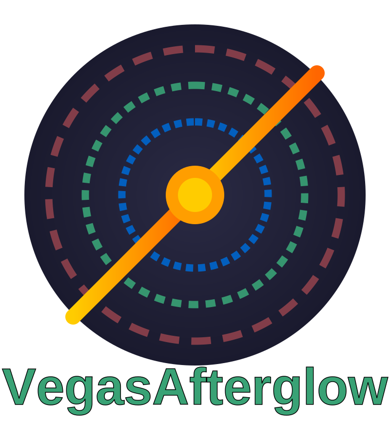

Welcome to VegasAfterglow
{kind=link}
VegasAfterglow is a high-performance C++ framework for modeling gamma-ray burst afterglows with Python bindings.
Overview
VegasAfterglow is a high-performance C++ framework designed for comprehensive modeling of gamma-ray burst (GRB) afterglows. It achieves exceptional computational efficiency, enabling the generation of multi-wavelength light curves in milliseconds and facilitating robust Markov Chain Monte Carlo (MCMC) parameter inference in seconds to minutes. The framework incorporates advanced models for shock dynamics (both forward and reverse shocks), diverse radiation mechanisms (synchrotron with self-absorption, and inverse Compton scattering with Klein-Nishina corrections), and complex structured jet configurations. A user-friendly Python wrapper is provided to streamline integration into scientific data analysis workflows.
Key Features
Shock Dynamics & Evolution: Forward and reverse shock modeling with arbitrary magnetization levels; accurate modeling across relativistic and non-relativistic regimes.
Ambient Medium: Support for uniform Interstellar Medium (ISM), stellar wind environments, and user-defined density profiles.
Energy and Mass Injection: Support for user-defined profiles for continuous energy and/or mass injection into the blast wave.
Jet Structure & Geometry: User-defined angular profiles for energy distribution, initial Lorentz factor, and magnetization; support for off-axis observers at any viewing angle.
Jet Spreading: Lateral expansion dynamics for realistic jet evolution (experimental).
Non-Axisymmetric Jets: Modeling of complex, non-axisymmetric jet structures.
Radiation Mechanisms: Synchrotron radiation, Synchrotron Self-Absorption (SSA), and Inverse Compton (IC) including Synchrotron Self-Compton (SSC) with Klein-Nishina corrections.
High Performance: Ultra-fast model evaluation, with a 30-point single-frequency light curve (forward shock & synchrotron only) generated in ~0.6 milliseconds on an Apple M2 chip.
Rapid MCMC Exploration: Parameter estimation with 10,000 MCMC steps for 8 parameters on 20 data points across multi-wavelength in ~10-30 seconds on an 8-core Apple M2 chip.
Cross-platform: Works on Linux, macOS, and Windows with C++20 compatible compilers.